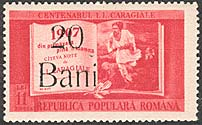
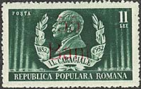
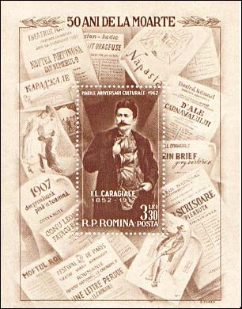
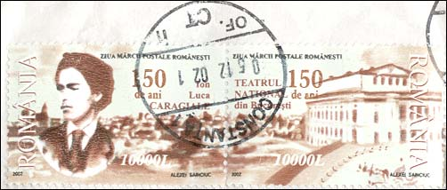
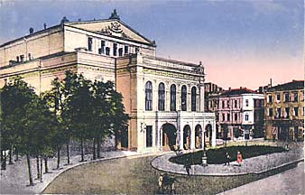
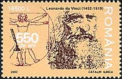
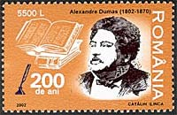

|
|

ION LUCA CARAGIALE - 150
National Theater - 150

Vrei sa cunosti lucrurile? Priveste-le de aproape.
Vrei sa le iubesti? Priveste-le de departe.
Ion Luca Caragiale
In the year 2002 UNESCO
celebrated the great
Romanian writer, humorist, dramatist and journalist, Ion Luca
Caragiale. [yon loo'kä käräjä'le]
Romania's foremost dramatist, his works sharply satirized Romanian
society. His masterpiece, A Lost Letter (1884), describes a
provincial government election won by a blackmailer. Other plays
include Carnival Adventures (1885) and False Accusation (1889), a
tragedy. He also wrote short stories and novels.
|
 |
 |
Ion Luca Caragiale was born on the 30th of January 1852 in the village of Haimanale (nowadays I. L. Caragiale), county of Dâmbovita. He attended primary school at the Princely School in Ploiesti, and the following four years he studied in private and at the "St. Peter and Paul" Gymnasium in the same city. Between 1868 and 1870 he attended the Conservatory of Dramatic Art in Bucharest, the Department of Declamation and Mimicry, having his uncle, the playwright Costache Caragiale as professor. In 1870 he quitted his job as a copyist with the Prahova Court of Law. Then he was hired as the second prompter and copyist with the National Theatre in Bucharest.
Between 1877 and 1881, he contributed with articles, reportages, notes or translations to the political paper of the Junimea society, Timpul (The Times), and attended the Junimea meetings. In the same paper he would publish, next to M. Eminescu and I. Creanga, his main plays: O noapte furtunoasa (Stormy Night), 1879; Conul Leonida fata cu Reactiunea (Master Leonida Facing Reactionaries), 1880; O scrisoare pierduta (A Lost Letter), 1885; D'ale carnavalului (Of the Carnival), 1885; Napasta (Injustice), 1890.

In 1879 he made his first trip abroad, at Vienna, as Titu Maiorescu's guest. In 1881 he took a job as a school inspector in the counties of Suceava and Neamt, and in 1882, moved, on demand, to the district of Arges-Vâlcea.
Caragiale settled with his family in Berlin, in the spring of 1905. From Berlin, where he continued to write, enriching Romanian literature with a few of its narrative masterpieces (Kir Ianulea, Calul Dracului [Devil's Horse]), Caragiale surprised everyone, as he made the most complete and most radical political analysis of the time, in his essay "1907. Din Primavara pâna-n toamna" (1907. From Spring to Autumn), partially published also in the Viennese review Die Zeit.

In 1912 he refused to take part in the festivities organized in this
country on the occasion of his reaching the age of 60. He died in
Berlin in the same year, during the night of the 8th towards the 9th
of June. He was buried in a Protestant cemetery on a temporary
basis. In the autumn of 1912 the coffin with his remains was brought
to this country, and buried at Bellu cemetery, near
Eminescu.
(After:
http://www.cimec.ro/Teatre/Caragiale_pag_eng/CaragialeBiografie_eng_1.htm
)

In the year 2002 the Romania postal administration has commemorated the 150th death anniversary of its greatest dramatist, and in the same time the 150th anniversary of the National Theater (he worked for), by two joined stamps, both shown above. The sources of inspiration of the designer are shown on this page: a portrait of the dramatist (on the top) and the picture of the old theater, shown above on a postcard. Near this card I show also the building of the new National Theater, in the center of Bucharest (University Place). These stamps are more or less like the most of the recent Romanian issues, namely rather ugly. They are shown on this site for their high historical, cultural, and also as illustration of their high face values due to inflation.

The set of four older stamps, equally shown above, appeared on 30th of January 1952 and it commemorated Caragiale's 100th birth anniversary. This was the first set issued after the deflation of the national currency, and for this reason three values were overprinted. They never appeared without the overprint on them. On the 4th of April 1952, three stamps of the set reappeared, with a face value of 55b (not shown, Sc. 813-15). Unfortunately, my Scott 1999 has somehow messed up the things, but my Michel 1998/9 is, fortunately, perfectly clear.
|
 |
 |
The Romanian Post has issued the 1st of March 2002 three stamps that commemorate other three great personalities, also celebrated by UNESCO. Please point to the stamps with the mouse index for more information.
| Published:
12/13/2002. Revised:
01/02/06. Copyright © 2003 - 2006 by Victor Manta, Switzerland. All rights reserved worldwide. |